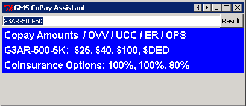

CareMark Cleaner
Below you will find two images showing the interface of the CareMark Cleaner Program. This program takes a bi-monthly raw excel data, does statistical analysis and outputs a fully formatted report for review. This program was created using Python 2. It saves around 2-3 hours of manual work. You simply place the file to be cleaned on your desktop, input the filename exactly, select your user from the drop down menu, and click "Generate RX Report". The output file will automatically be placed on your desktop for review.
- General Statistics of file including totals and individual counts
- Top Twenty Expense Individuals
- Top Twenty RX Prescriptions
- Top Twenty Prescriptions Filled Per Person
- Individuals Representing 80% of the Total Cost
- Highest RX Groups Download
Reports
CoPay Assistant
This program is a simple lookup tool which can be used to find out corresponding co pays related to Health policies and RX policies.
- Policy Costs for Office visits, Urgent Care, ER and Surgury.
- Coinsurance while in and out of network Download
Reports
Kalamazoo Food App
This is a future project, I would like to create a program that helps you decide where to eat in kalamazoo, based off of specific parameters. The program will learn from your choices and attempt to learn from the user